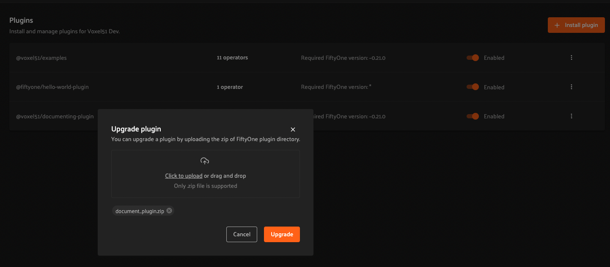
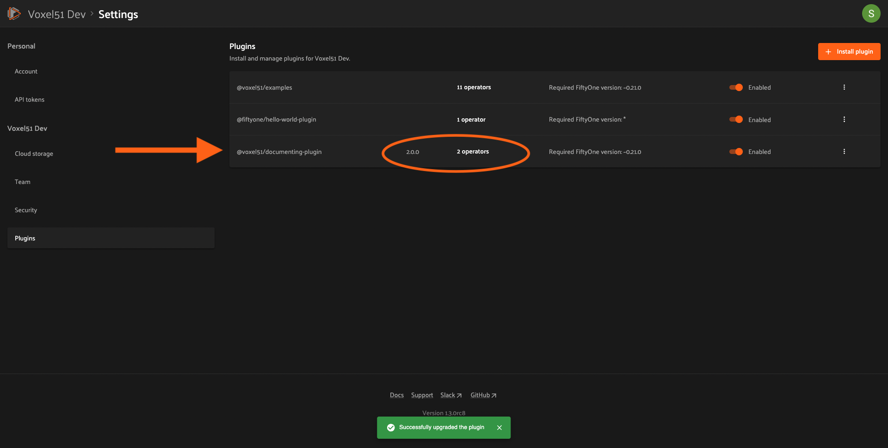
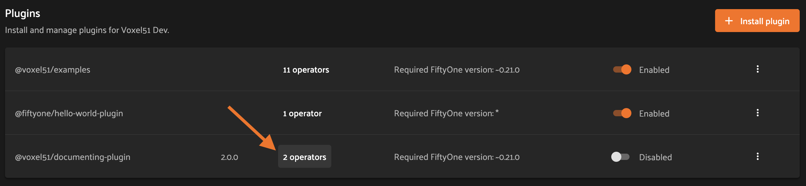
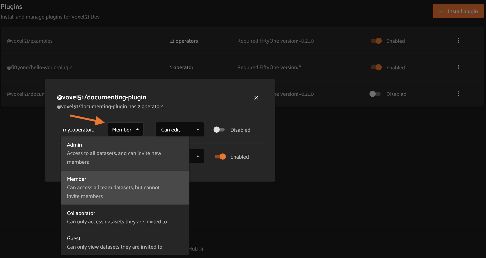
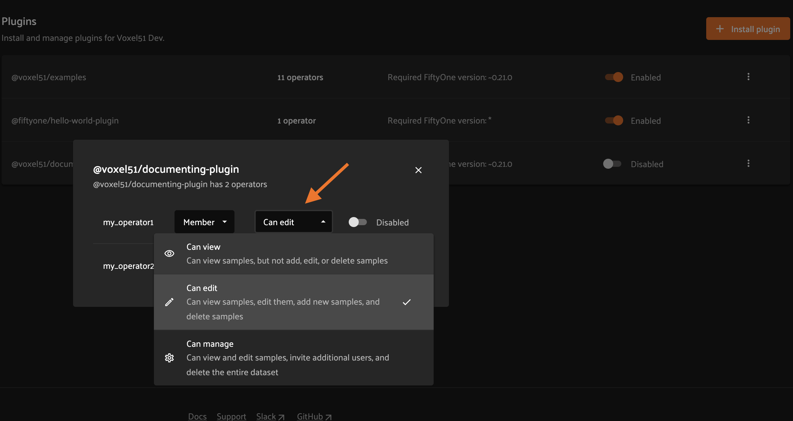
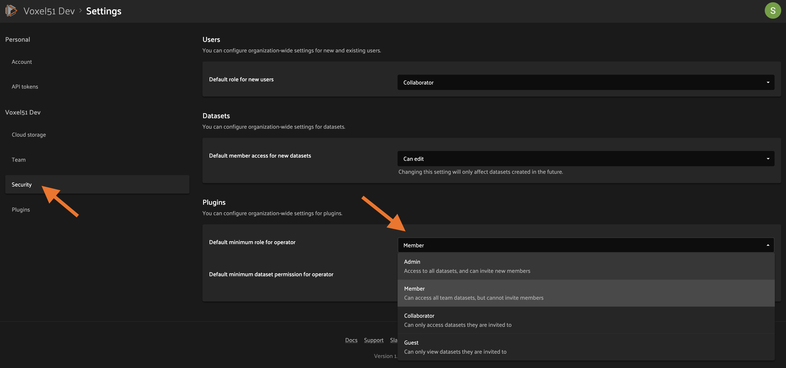
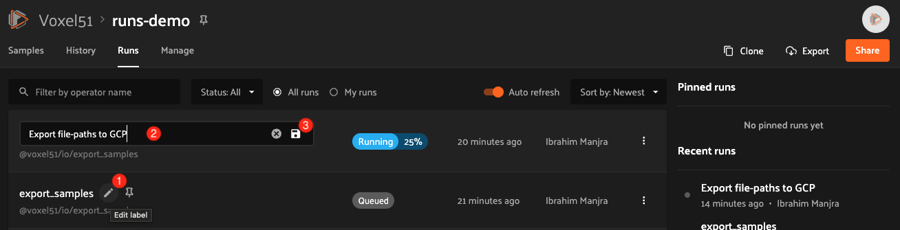
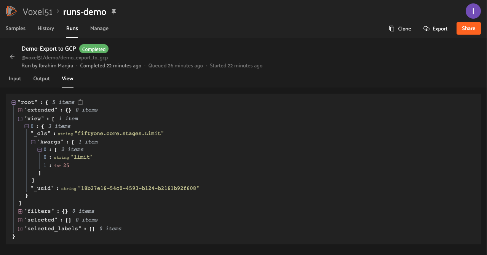

FiftyOne Teams Plugins¶
FiftyOne Teams provides native support for installing and running FiftyOne plugins, which offers powerful opportunities to extend and customize the functionality of your Teams deployment to suit your needs.
Note
What can you do with plugins? Check out delegated operations to see some quick examples, then check out the FiftyOne plugins repository for a growing collection of prebuilt plugins that you can add to your Teams deployment!
Plugins page¶
Admins can use the plugins page to upload, manage, and configure permissions for plugins that are made available to users of your Teams deployment.
Admins can access the plugins page under Settings > Plugins. It displays a list of all installed plugins and their operators, as well as the enablement and permissions of each.

Installing a plugin¶
Admins can install plugins via the Teams UI or Management SDK.
Note
A plugin is a directory (or ZIP of it) that contains a top-level
fiftyone.yml file.
Teams UI¶
To install a plugin, click the “Install plugin†button on the plugins page.
Then upload or drag and drop the plugin contents as a ZIP file and click install.

You should then see a success message and the newly installed plugin listed on the plugins page.

SDK¶
Admins can also use the
upload_plugin() method from
the Management SDK:
1 2 3 4 | import fiftyone.management as fom # You can pass the directory or an already zipped version of it fom.upload_plugin("/path/to/plugin_dir") |
Upgrading a plugin¶
Admins can upgrade plugins at any time through the Teams UI or Management SDK.
Teams UI¶
To upgrade a plugin, click the plugin’s dropdown and select “Upgrade plugin”.

Then upload or drag and drop the upgraded plugin as a ZIP file and click upgrade.
Note
If the name attribute within the uploaded plugin’s fiftyone.yml file
doesn’t match the existing plugin, a new plugin will be created. Simply
delete the old one.
You should then see a success message and the updated information about the plugin on the plugins page.
SDK¶
Admins can also use the
upload_plugin() method from
the Management SDK with the overwrite=True option:
1 2 3 4 | import fiftyone.management as fom # You can pass the directory or an already zipped version of it fom.upload_plugin("/path/to/plugin_dir", overwrite=True) |
Uninstalling a plugin¶
Admins can uninstall plugins at any time through the Teams UI or Management SDK.
Note
Did you know? You can enable/disable plugins rather than permanently uninstalling them.
Teams UI¶
To uninstall a plugin, click the plugin’s dropdown and select “Uninstall plugin”.
SDK¶
Admins can also use the
delete_plugin() method from
the Management SDK:
1 2 3 | import fiftyone.management as fom fom.delete_plugin(plugin_name) |
Enabling/disabling plugins¶
Teams UI¶
When plugins are first installed into Teams, they are enabled by default, along with any operators they contain.
Admins can enable/disable a plugin and all of its operators by toggling the enabled/disabled switch.

Admins can also disable/enable specific operators within an (enabled) plugin by clicking on the plugin’s operators link.
and then toggling the enabled/disabled switch for each operator as necessary.

SDK¶
Admins can also use the
set_plugin_enabled()
and
set_plugin_operator_enabled()
methods from the management SDK:
1 2 3 4 5 6 7 | import fiftyone.management as fom # Disable a plugin fom.set_plugin_enabled(plugin_name, False) # Disable a particular operator fom.set_plugin_operator_enabled(plugin_name, operator_name, False) |
Plugin permissions¶
Admins can optionally configure access to plugins and individual operators within them via any combination of the permissions described below:
Permission |
Description |
|---|---|
Minimum Role |
The minimum role a user must have to execute the operation. |
Minimum Dataset Permission |
The minimum dataset permission a user must have to perform the operation on a particular dataset. |
Teams UI¶
To configure the permissions for an operator, first click on the plugin’s operators link.
Then change the dropdown for the operator to reflect the desired permission level.
 {kind=link}
{kind=link}
SDK¶
Admins can also use the
set_plugin_operator_permissions()
method from the Management SDK:
1 2 3 4 5 6 7 8 9 10 11 12 13 14 15 16 17 18 19 20 21 22 23 | import fiftyone.management as fom # Set minimum role permission only fom.set_plugin_operator_enabled( plugin_name, operator_name, minimum_role=fom.MEMBER, ) # Set minimum dataset permission only fom.set_plugin_operator_enabled( plugin_name, operator_name, minimum_dataset_permission=fom.EDIT, ) # Set both minimum role and minimum dataset permissions fom.set_plugin_operator_enabled( plugin_name, operator_name, minimum_role=fom.EDIT, minimum_dataset_permission=fom.EDIT, ) |
Default permissions¶
When new plugins are installed, any operators they contain are initialized with the default permissions for your deployment.
By default, the initial permissions are:
Permission |
Default |
|---|---|
Minimum Role |
Member |
Minimum Dataset Permission |
Edit |
Teams UI¶
Default operator permissions can be configured by navigating to the page at Settings > Security and looking under the Plugins header. Click the dropdown for the permission you want to change and select the new value.
SDK¶
Admins can also use the
set_organization_settings()
method from the Management SDK:
1 2 3 4 5 6 | import fiftyone.management as fom fom.set_organization_settings( default_operator_minimum_role=fom.MEMBER, default_operator_minimum_dataset_permission=fom.EDIT, ) |
Delegated operations¶
Delegated operations are a powerful feature of FiftyOne’s plugin framework that allows users to schedule tasks from within the App that are executed in the background on a connected compute cluster.
With FiftyOne Teams, your team can upload and permission custom operations that your users can execute from the Teams App, all of which run against a central orchestrator configured by your admins.
Why is this awesome? Your AI stack needs a flexible data-centric component that enables you to organize and compute on your data. With delegated operations, FiftyOne Teams becomes both a dataset management/visualization tool and a workflow automation tool that defines how your data-centric workflows like ingestion, curation, and evaluation are performed. In short, think of FiftyOne Teams as the single source of truth on which you co-develop your data and models together.
What can delegated operations do for you? Get started by installing any of these plugins available in the FiftyOne Plugins repository:
✏️ Utilities for integrating FiftyOne with annotation tools |
|
🧠Utilities for working with the FiftyOne Brain |
|
✅ Utilities for evaluating models with FiftyOne |
|
📠A collection of import/export utilities |
|
📈 Utilities working with FiftyOne database indexes |
|
⚒️ Call your favorite SDK utilities from the App |
|
🤖 An AI assistant that can query visual datasets, search the FiftyOne docs, and answer general computer vision questions |
|
🌠Download datasets and run inference with models from the FiftyOne Zoo, all without leaving the App |
For example, wish you could import data from within the App? With the @voxel51/io, plugin you can!

Want to send data for annotation from within the App? Sure thing, just install the @voxel51/annotation plugin:

Have model predictions on your dataset that you want to evaluate? The @voxel51/evaluation plugin makes it easy:

Need to compute embedding for your dataset so you can visualize them in the Embeddings panel? Kick off the task with the @voxel51/brain plugin and proceed with other work while the execution happens in the background:

When you choose delegated execution in the App, these tasks are automatically scheduled for execution on your connected orchestrator and you can continue with other work. Meanwhile, all datasets have a Runs tab in the App where you can browse a history of all delegated operations that have been run on the dataset and their status.
Configuring your orchestrator(s)¶
FiftyOne Teams offers a builtin orchestrator that is configured as part of your team’s deployment with a default level of compute capacity.
It is also possible to connect your FiftyOne Teams deployment to an externally managed workflow orchestration tool (Airflow, Flyte, Spark, etc).
Note
Contact your Voxel51 support team to scale your deployment’s compute capacity or if you’d like to use an external orchestrator.
Managing delegated operations¶
Every dataset in FiftyOne Teams has a Runs page that allows users with access to monitor and explore delegated operations scheduled against that dataset.
All scheduled operations are maintained in a queue and will be automatically executed as resources are available on the targeted orchestrator.
Note
The Runs page only tracks operations that are scheduled for delegated execution, not operations that are executed immediately in the App.
Runs page¶
The Runs page is accessible to all users with Can view access to the dataset.
You can access the Runs page by clicking on the “Runs†tab from the Samples tab.
Once you are on the Runs page, you will see a table with the list of all operators scheduled by any user of your organization on the dataset. You can sort, search and filter runs listed to refine the list as you like:

Sorting¶
By default, the runs table is sorted by recency, but you can use the dropdown menu in the upper left of table to sort by other fields like update time or the name of the operator:
Filtering¶
You can also filter the runs table to see a subset of runs.
Use the “My runs†radio button to see only the runs that you scheduled:

You can further refine the list of runs using the status dropdown to select one or more status you would like to filter by:

Searching¶
You can also use the search functionality to filter the list of runs by keyword. As you type your query in the search box, the list of runs will be updated to show only the runs matching your query:
Note
Search is case-sensitive and you can currently only search by operator name, not label. For example, searches will not match against Demo: Export to GCP in the image above.
Re-running¶
From the Runs page, you can trigger a re-run of any listed run by clicking the three-dots to open actions menu and then clicking “Re-run”:
Pinning¶
Pinned runs are displayed to the right of the runs table. By default, five pinned runs will be displayed. However, if there are more than five pinned runs, you will see a button to expand the list.
To pin a run, hover over its row in the runs table and click the pin icon that appears beside the operator label:

Note
Pinned runs are stored at the dataset-level and will be visible to all users with access to the dataset.
Renaming¶
When delegating an operator multiple times on the same dataset, you may wish to give the runs custom labels so that you can easily identify each run later.
To edit the label of an operator run, move your mouse cursor over the label of interest and click the pencil button as indicated by “1†below. This will present an input field indicated by “2†where you can update label to text of your choice. Once you are ready to apply changes, click the save button indicated by “3”.
Mark as failed¶
If a delegated operation run terminates unexpectedly without reporting failure, you can manually mark it as failed from the Runs page.
To mark a run as failed, click the three dots indicated by “1”. Then, in the menu, click “Mark as failed†as indicated by “2”. The run status will be updated and will now display as failed.
Note
If the delegated operation is, in fact, still in progress in your orchestrator, marking the run as failed will not terminate the execution of operation.
Monitoring progress¶
Delegated operations can optionally report their progress during execution.
If a progress is available for a run, it will be displayed in the Runs table as indicated by “2”. By default, the progress of running operations is automatically refreshed. You can disable auto-refresh of running operations by toggling the auto refresh setting indicated by “1”.
Note
Only the progress of running operations is automatically refreshed.
Run page¶
The Run page allows you to see information about a specific run such as inputs, outputs, and errors.
You can visit the Run page for a run by clicking on a run in the runs table, the Pinned runs, or Recent runs widgets.
Input¶
The Input tab on the Run page lets you see the input parameters that were provided when the run was scheduled:
Raw input
By default, a rendered version (similar to what is displayed when invoking an operator) of input parameters is displayed. However, you can switch to raw view by clicking the “Show raw†toggle button:
Output¶
The Output tab on the Run page lets you see the preview of the result of a completed run:
Note
Output tab is only available for completed run.

Errors¶
The Errors tab on the Run page will appear if the run failed and lets you see the errors that occurred:

View¶
The View tab on the Run page lets you see the dataset view on which the run was scheduled:
